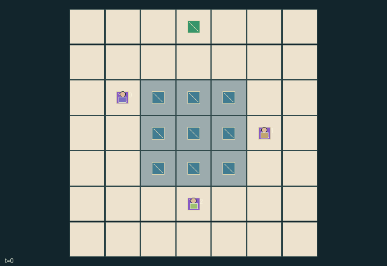

GI135 · Nine Shards Council

Cooperatively fill the nine mosaic cells with their hidden target colours, using exactly nine finite tiles, spatial access, public hints and transfers.
Identity and original contract
3 independently actionable roles; 19 discrete commands per role; 80 native observation columns per role; original horizon 96 steps. Declared per-step reward range: -1 to 1. Observation regime: partially_observable.
Source SHA-256: 729b52d4f841f8cce8d6bfe93771c99cf046dcc2ef7f2056e58ebe4a000ebbc8
The objective, rewards, population, map and horizon remain original. A preview is not a success claim.
Objective and gameplay
Cooperatively fill the nine mosaic cells with their hidden target colours, using exactly nine finite tiles, spatial access, public hints and transfers.
A role's clue changes partner information; drawing and gifting change shared tile availability; placement consumes a unique tile and permanently closes that cell. Simultaneous resource/placement conflicts use public cyclic priority.
- Each steward alone sees one three-cell target row. All hands and the current mosaic are public. Colours are 0, 1, 2.
- Nine tiles exist: one of colour i starts with role i, and two of each colour start in the communal urn. Hand capacity is three total tiles.
- Walk on the workshop and mosaic floor. Select a colour, then place one tile on an adjacent unfilled board cell. Placement is irreversible.
- Near the urn, draw a colour if stock and hand capacity permit. Give your selected colour to an adjacent steward with spare capacity.
- Each role has two ink. Reveal one selected column of your own recipe row as a truthful public clue attached to its actual board cell.
- Moves are simultaneous; interactions use priority starting at input clock mod 3. Earlier resource or placement commitments can prevent later requests.
- No correctness feedback is paid until the board is full. Shared terminal reward is 2*(correct cells/9)-1; timeout pays no correctness reward.
Ending: All nine board cells have irreversible tiles, whether correct or incorrect. Terminal shared reward is 2*(correct/9)-1. Otherwise truncate at 96 steps without a correctness payout.
Action timing: All roles choose simultaneously. Input masks are applied; moves resolve first with old-cell exclusion and destination contention. Colour selections update next. For i=(input_t+offset) mod 3, offset=0,1,2, interactions recheck current resources/empty cells. Conflicts can therefore turn an initially legal request into a no-effect request. Transfer receiver is the first eligible role in cyclic order after the giver. Wait is always legal.
What this game explores
Information, sensing & communication: Who knows a fact, when it was measured, and whether it was communicated are separate state variables. Test memory or communication using only the same role-visible evidence.
Complementary production & service: A useful outcome requires ordered stages, scarce equipment or another role's capability. Measure real completed products and resource circulation rather than counting intermediate actions as success.
Joint transport & shared access: Positions, load geometry, occupancy and persistent access constrain whose action can succeed next. Distinguish physical handoff, shared controls and simultaneous force from a cosmetic cooperation label.
These are questions supported by rule structure, not observed learning effects.
Play it: operating walkthrough
crucibles play --game gi135Keep Python running and open its printed address. Select this game, set a seed and press Create session. The game itself is always English.
Assign a role range to Host with Assign / take over, or Assign all roles. Invite a second participant with Create player invitation, then assign a disjoint subset. Every original role is available.
For every owned role choose a legal command and press Queue. Arrow keys / WASD queue a declared directional action for the current role camera when available. Space or Advance one joint step advances everyone together. Non-directional games use the selectors.
Unqueued roles use the labelled untrained uniform-legal policy. Take over or release roles before the next step without resetting. Full-state debug is privileged and permanently logged; role cameras preserve permissions. Close the session to retain logs. Server restart does not restore sessions.
Complete command reference
IDs and English labels exactly match the manifest. Availability depends on role, resources, location and phase. An available action can still have no productive effect.
0·Wait
1·Attempt north
2·Attempt east
3·Attempt south
4·Attempt west
5·Select colour 0
6·Select colour 1
7·Select colour 2
8·Place selected tile on north adjacent board cell
9·Place selected tile on east adjacent board cell
10·Place selected tile on south adjacent board cell
11·Place selected tile on west adjacent board cell
12·Give selected tile to an adjacent role with free hand capacity
13·Draw colour 0 near communal urn
14·Draw colour 1 near communal urn
15·Draw colour 2 near communal urn
16·Publicly reveal own recipe column 0 for one ink
17·Publicly reveal own recipe column 1 for one ink
18·Publicly reveal own recipe column 2 for one ink
Roles and capability identifiers
These original role names describe capabilities, not interchangeable skins. Check each owned role's legal selector before planning handoffs.
agent_0·Steward of private recipe row 0
agent_1·Steward of private recipe row 1
agent_2·Steward of private recipe row 2
Information and observation permissions
The board, all hands, selected colours, urn supplies, ink, positions and disclosed hints are public. Role i privately sees only recipe row i. Undisclosed target colours do not enter public observations, legal masks or preterminal rewards. The known fixed map, including the mosaic floor, is fully walkable.
The GIF is full-state debug and may reveal hidden entities or private state. Train on obs[agent], not the picture, state tree or another role's private row. Field slices and visibility are in the original manifest.
Reinforcement-learning integration
import jax
from crucibles_jaxmarl import make
env = make("gi135")
key = jax.random.PRNGKey(0)
key, rk, ak, sk = jax.random.split(key, 4)
obs, state = jax.jit(env.reset)(rk)
actions = env.sample_actions(ak, state)
obs, state, rewards, dones, info = jax.jit(env.step_env)(sk, state, actions)
done = dones["__all__"]Observations are float32 vectors of width 80; actions are scalar int32; masks have 19 entries. Supply all 3 roles each transition. Masked sampling is an engineering reference, not a trained learner.
step_env retains terminal data without reset. step performs outer autoreset and keeps terminal data in info["raw_state"] and info["raw_observation"]. Use dones["__all__"] for episode boundaries; separate completion, failure and time limit in analysis.
JIT or vmap equal identities and shapes. Split independent reset, policy and transition keys. Group different shapes explicitly; do not shrink the population or horizon. Host rendering stays outside training.
Training questions and fair evaluation
Define valid completion from the objective before fitting. Preserve original rewards and also report real deliveries/services, losses, resource state, unresolved episodes and per-role returns. Animation is not a reward signal.
Who knows a fact, when it was measured, and whether it was communicated are separate state variables. Test memory or communication using only the same role-visible evidence.
A useful outcome requires ordered stages, scarce equipment or another role's capability. Measure real completed products and resource circulation rather than counting intermediate actions as success.
Positions, load geometry, occupancy and persistent access constrain whose action can succeed next. Distinguish physical handoff, shared controls and simultaneous force from a cosmetic cooperation label.
Compare memory, communication or centralized critics under matched actor information. Declare critic access; keep actor inputs role-filtered. Match partner/opponent distributions, masks, compute and checkpoint selection. Final tests never enter fitting or selection.
Independent training runs or source-pairing blocks are inferential units; episodes from one policy are not independent training replications. Save hashes, keys, versions, device, time and cost. Negative, zero, failed and indeterminate outcomes are valid. No trained checkpoint or target score is supplied.
Classification and evidence
Overlapping editorial labels are reading aids, not proof of novelty, difficulty, strategic equivalence or learning effects.
- Information, sensing & communication
- Evidence
manifest.task.objective: Cooperatively fill the nine mosaic cells with their hidden target colours, using exactly nine finite tiles, spatial access, public hints and transfers.
- Evidence
manifest.task.observation_access: The board, all hands, selected colours, urn supplies, ink, positions and disclosed hints are public. Role i privately sees only recipe row i. Undisclosed target colours do not enter public observations, legal masks or preterminal rewards. The known fixed map, including the mosaic floor, is fully walkable.
- Evidence
manifest.actions.16: Publicly reveal own recipe column 0 for one ink
- Complementary production & service
- Evidence
manifest.task.observation_access: The board, all hands, selected colours, urn supplies, ink, positions and disclosed hints are public. Role i privately sees only recipe row i. Undisclosed target colours do not enter public observations, legal masks or preterminal rewards. The known fixed map, including the mosaic floor, is fully walkable.
- Evidence
manifest.actions.16: Publicly reveal own recipe column 0 for one ink
- Evidence
manifest.actions.17: Publicly reveal own recipe column 1 for one ink
- Joint transport & shared access
- Evidence
manifest.task.objective: Cooperatively fill the nine mosaic cells with their hidden target colours, using exactly nine finite tiles, spatial access, public hints and transfers.
Source, receipts and preview limits
The world-only English GIF replays saved untrained legal actions through the original kernel. At most 25 actual endpoints include initial and terminal state; no invented interpolation. It is full-state debug, not the role observation.
Original source, observation slices, manifest and mechanism
Native receipt · Presentation receipt
Engineering passes do not establish learning. Nonzero floating differences remain recorded and undetermined; no new tolerance was introduced. Human scores remain unverified.